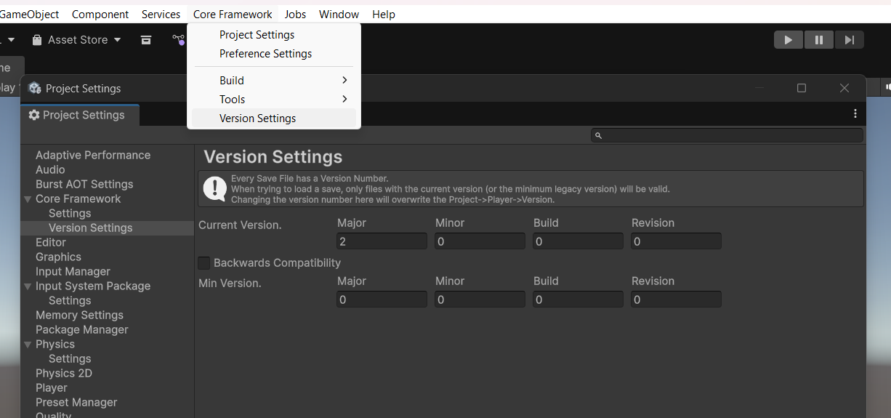

VersionProjectSettingsProvider
Source: ./Editor/Settings/VersionProjectSettingsProvider.cs
Overview
Registers the Version Settings UI for CoreFramework at:
Edit → Project Settings → Core Framework → Version Settings
The page lets you edit the Current Version and the Min Version, with an optional Backwards Compatibility toggle that mirrors Current → Min.

Responsibilities
- Path & scope:
"Project/Core Framework/Version Settings"(SettingsScope.Project) - UI (IMGUI):
- Current Version (Major, Minor, Build, Revision)
- Backwards Compatibility toggle (when enabled, Min = Current)
- Min Version (Major, Minor, Build, Revision)
- Apply logic:
- When Current changes →
VersionProjectSettings.instance.CurrentFileVersion = new(...) - When Min changes (and compatibility is off) →
VersionProjectSettings.instance.MinFileVersion = new(...)
- When Current changes →
// Excerpt (structure)
public override void OnGUI(string searchContext)
{
EditorGUILayout.HelpBox(
"Every Save File has a Version Number.\n" +
"When trying to load a save, only files with the current version (or the minimum legacy version) will be valid.\n" +
"Changing the version number here will overwrite the Project->Player->Version.",
MessageType.Info);
// Edit Current Version → writes to VersionProjectSettings.instance.CurrentFileVersion
// Toggle Backwards Compatibility → optionally mirror Current → Min
// Edit Min Version → writes to VersionProjectSettings.instance.MinFileVersion
}
Menu shortcut
- Core Framework → Version Settings
Opens this page via
SettingsService.OpenProjectSettings("Project/Core Framework/Version Settings").
Notes
- Changing Current Version updates
PlayerSettings.bundleVersionandVersionControl.CurrentFileVersionthrough the setter inVersionProjectSettings. - The min version controls how far back your save compatibility extends.